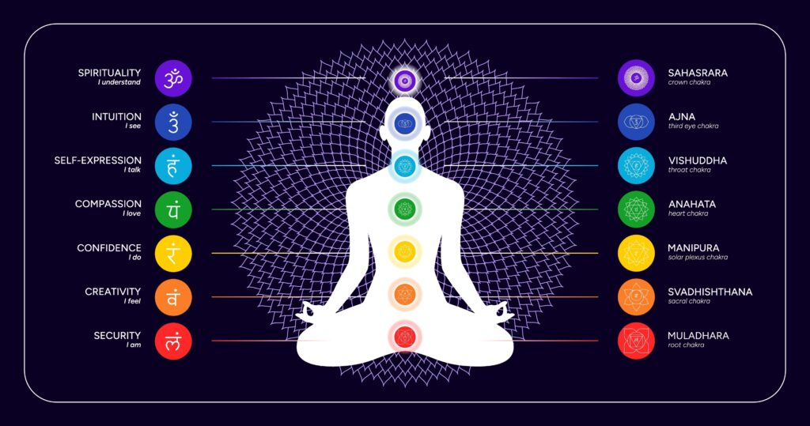

În adâncurile tăcute ale mărilor lumii, acolo unde lumina soarelui abia pătrunde, natura sculptează una dintre cele mai enigmatice și prețuite geme organice: coralul. Departe de a fi o simplă piatră, coralul reprezintă un paradox profund – o creatură vie care, prin alchimia timpului și a biologiei, devine un material mineral prețios, un simbol al vieții născut din rămășițele scheletice ale unor minuscule organisme marine.[1, 2] Dintre toate varietățile sale cromatice, coralul somon, cu nuanța sa caldă, roz-portocalie, ocupă un loc special, evocând delicatețea unui apus oceanic și forța vitală a sângelui. Această culoare distinctă nu este doar o particularitate estetică, ci și purtătoarea unei încărcături simbolice unice, care o diferențiază de coralul roșu aprins sau de cel alb pur.[3]
Această monografie își propune să ofere o explorare exhaustivă a coralului somon, un material care a fascinat umanitatea de-a lungul mileniilor. Călătoria noastră va începe în întunericul abisal, pentru a înțelege geneza sa biologică și complexitatea ecologică. Vom naviga apoi prin curenții istoriei, descoperind cum scheletul acestui mic animal a devenit un obiect râvnit, un simbol al puterii, bogăției și protecției în civilizații de pe întregul glob. Vom analiza rolul său de remediu potent în farmacopeile tradiționale, de la Ayurveda indiană la medicina tibetană, și vom vedea cum știința modernă a ajuns să valideze unele dintre aceste utilizări străvechi în aplicații medicale de avangardă. În final, vom plonja în dimensiunile sale metafizice, decodificând semnificațiile sale în cadrul tradițiilor spirituale ale lumii, de la astrologia vedică la principiile Feng Shui și sistemul chakrelor. Acest raport se adresează cunoscătorului, colecționarului și practicianului deopotrivă, oferind o perspectivă completă, care unește rigoarea științifică cu rezonanța culturală și spirituală a acestui giuvaier viu al mării.
Pentru o privire de ansamblu rapidă, iată principalele caracteristici ale coralului, care vor fi detaliate în capitolele următoare.
| Caracteristică | Descriere | Surse |
|---|---|---|
| Denumire | Piatra de coral; denumirea provine din grecescul korallion (schelet dur). | [4, 5] |
| Origine | Organică; scheletul calcaros al coloniilor de polipi marini. | [4, 6, 7] |
| Aspect | Mat și poros în stare naturală; după prelucrare, capătă un luciu sticlos sau ceros. Poate prezenta mici adâncituri sau linii de creștere. | [6, 7] |
| Formula chimică | CaCO3 (Carbonat de calciu) | [8, 4] |
| Duritate (scara Mohs) | 2,5 – 4 | [4, 6] |
| Culoare | Roșu, roz, somon (roz-portocaliu), portocaliu, alb, negru, auriu. | [4] |
| Bază de cristalizare | Amorf (fără structură cristalină definită). | [8] |
| Cuvinte cheie asociate | Protecție, pace, purificare, transformare, vitalitate, pasiune, creativitate. | [4] |
| Chakre influențate | Chakra rădăcină (Muladhara), chakra sacrală (Svadhisthana). | [4] |
| Însemnătate | Amuletă de protecție (în special pentru copii), simbol al bogăției, statutului social, fertilității și forței vitale. | [9, 10] |
| Proprietăți vindecătoare | Îmbunătățirea circulației sanguine, susținerea sistemului muscular și osos, echilibrare emoțională, reducerea stresului. | [4, 11, 12] |
| Recomandat pentru | Persoane care doresc să-și sporească vitalitatea, curajul și creativitatea; cei care trec prin perioade de tranziție sau se confruntă cu stări de anxietate; recomandat zodiilor Pești, Vărsător, Berbec, Taur, Rac, Capricorn, Săgetător, Balanță și Scorpion. | [4, 11, 12] |
Pentru a înțelege pe deplin valoarea și semnificația coralului somon, este esențial să pătrundem mai întâi în natura sa fundamentală. Trecerea de la o colonie de animale marine la o gemă prețioasă este un proces complex, guvernat de legile biologiei, chimiei și geologiei marine. Această secțiune va demistifica coralul, prezentându-i clasificarea științifică, procesul de formare a scheletului său colorat, habitatele sale specifice și proprietățile gemologice care îl definesc.
Contrar percepției comune, coralul nu este o plantă acvatică sau o rocă, ci un animal marin nevertebrat colonial.[1, 2] Coralii prețioși, inclusiv varietatea somon, aparțin Regnului Animalia, Încrengăturii Cnidaria și Clasei Octocorallia. Genul cel mai important din punct de vedere gemologic este Corallium, specia emblematică fiind Corallium rubrum, cunoscută și sub denumirea de coral roșu mediteranean.[3, 13]
Ciclul de viață al coralului începe cu o larvă microscopică, numită planulă, care plutește liber în curenții oceanici. După o perioadă, aceasta se fixează pe un substrat dur, de obicei o rocă de pe fundul mării, și se maturizează într-o formă staționară numită polip.[1] Polipul este un animal cu un corp saciform, de doar câțiva milimetri în diametru, având o deschidere centrală (gura) înconjurată de un set de opt tentacule, o caracteristică definitorie pentru clasa Octocorallia (simetrie radială octamerică).[3]
Acest polip individual începe apoi să se reproducă asexuat, prin înmugurire, creând clone genetice identice. Astfel, ia naștere o colonie. Fiecare polip din colonie secretă la baza sa un exoschelet dur, iar de-a lungul a nenumărate generații, acumularea acestor schelete formează structura ramificată, asemănătoare unui arbust, pe care o asociem cu coralul.[1, 2] În starea sa vie, colonia are un aspect spectaculos: ramurile scheletice sunt acoperite de un țesut moale, viu colorat (roșu aprins la C. rubrum), numit coenenchim, din care ies numeroși polipi retractili, de obicei de culoare albă.[3, 14] Această distincție între animalul viu, cu țesuturile sale moi, și scheletul dur recoltat este fundamentală pentru înțelegerea coralului ca material gemologic.
Procesul prin care polipii construiesc scheletul durabil este un exemplu remarcabil de biomineralizare. Scheletul, care constituie gema prețioasă, este clasificat în mineralogie drept un carbonat biogen.[8]
Compoziția sa chimică primară este carbonatul de calciu (CaCO3), sub formă de calcit.[8, 4, 9] Structura este formată din spiculi de carbonat de calciu extrem de duri, fuzionați între ei, ceea ce conferă materialului durabilitate și densitate.[3] Pe lângă componenta anorganică majoritară, scheletul conține și o mică proporție de proteine organice, precum conchiolina, care acționează ca o matrice de legătură și influențează proprietățile mecanice ale materialului.[15] Această combinație de mineral și materie organică este cea care plasează coralul la granița dintre lumea vie și cea anorganică, o dualitate care a alimentat fascinația și simbolismul său de-a lungul istoriei.
Culoarea vibrantă și permanentă a coralului prețios este una dintre cele mai valoroase caracteristici ale sale. Nuanțele calde de roșu, roz și, în special, somon (roz-portocaliu) se datorează prezenței pigmenților carotenoizi încorporați în matricea de carbonat de calciu în timpul formării scheletului.[3] Acești pigmenți sunt absorbiți de polipi din dieta lor, care constă în principal din plancton și alte particule organice suspendate în apă.[9]
Intensitatea și nuanța exactă a culorii sunt influențate de o serie de factori de mediu. Adâncimea la care trăiește colonia, temperatura apei și compoziția specifică a algelor și fitoplanctonului din habitat determină tipul și concentrația de carotenoizi disponibili.[9] Astfel, coralul devine o arhivă cromatică a condițiilor ecologice în care s-a dezvoltat.
Cercetări științifice recente au adăugat un nou nivel de complexitate acestei înțelegeri. Un studiu asupra microbiomului speciei Corallium rubrum a relevat o posibilă legătură între culoarea coralului și bacteriile simbionte care trăiesc în țesuturile sale. S-a observat că în varietățile de coral alb (colormorfi albi), o bacterie din genul Spirochaeta este aproape absentă, în timp ce este prezentă în coralii colorați. Deși funcția exactă a acestui simbiont nu este pe deplin înțeleasă, prezența sa pare a fi corelată cu pigmentarea, sugerând că microbiomul coralului joacă un rol activ în crearea culorii sale prețioase.[14]
Coralii prețioși nu formează recifele masive din apele tropicale de mică adâncime; ei prosperă în condiții foarte specifice, de obicei în medii întunecate, pe substraturi stâncoase cu sedimentare redusă.
Principalele zone de proveniență sunt:
Industria coralului se confruntă cu provocări ecologice majore. Recoltarea excesivă, în special în secolele trecute, a epuizat sever coloniile din apele mai puțin adânci.[3, 16, 17] Mai recent, amenințarea principală este reprezentată de schimbările climatice. Creșterea temperaturii oceanelor provoacă fenomenul de albire a coralilor (coral bleaching), în care polipii streșați elimină algele simbiotice, ducând la moartea coloniei.[18, 19, 20] În fața acestei crize, au apărut eforturi de conservare, cum ar fi crearea de arii marine protejate în Mediterana, unde s-a observat o refacere a populațiilor de corali, și proiecte de cercetare în Taiwan care explorează reproducerea artificială pentru a restaura recifele afectate.[3, 21, 22]
Ca material gemologic, coralul somon este evaluat pe baza unui set de proprietăți fizice și optice specifice. Duritatea sa este relativ scăzută, situându-se între 3 și 4 pe scara Mohs, ceea ce îl face vulnerabil la zgârieturi și necesită o purtare atentă.[3, 8, 9, 6] Această moliciune este, paradoxal, și motivul pentru care a putut fi prelucrat de culturile antice cu unelte simple, asigurându-i un loc timpuriu în istoria bijuteriilor.
Scheletul natural are un aspect mat, poros, dar poate fi șlefuit pentru a obține un luciu sticlos sau ceros.[3, 6, 7] Datorită opacității sale, coralul este aproape întotdeauna tăiat en cabochon (o formă rotunjită, fără fațete) sau prelucrat sub formă de mărgele sferice sau de alte forme sculptate.[3] Coralul de cea mai înaltă calitate, denumit "coral nobil" (coral nobil), se distinge prin culoarea sa uniformă, intensă și prin structura sa compactă, cu porozitate minimă.[9]
Identificarea coralului autentic se bazează pe observarea structurii sale naturale, care adesea prezintă linii fine de creștere sau mici imperfecțiuni. Pe piață există numeroase imitații (sticlă, plastic, os vopsit) și tratamente menite să îmbunătățească aspectul materialului de calitate inferioară. Cele mai comune tratamente includ vopsirea pentru a intensifica culoarea, impregnarea cu ceară sau polimeri pentru a umple porii și a îmbunătăți luciul, și încălzirea.[9] Un gemolog poate identifica aceste tratamente prin metode precum examinarea la microscop, teste de spectroscopie sau reacția la acetonă.[9]
Istoria coralului este împletită cu istoria umanității însăși. Fiind unul dintre primele materiale organice folosite pentru podoabe, a călătorit pe rute comerciale antice, a fost încrustat în tezaure regale, a servit drept amuletă protectoare pentru nenumărate generații și a devenit un purtător de semnificații profunde în diverse sisteme de credință. Acest capitol urmărește parcursul coralului de la primele sale utilizări preistorice până la rolul său în marile civilizații ale lumii.
Utilizarea coralului ca material ornamental este de o vechime remarcabilă, datând de peste 6.200 de ani, din perioada neolitică.[9] Descoperiri arheologice din situri preistorice europene au scos la iveală mărgele de coral în contexte funerare, indicând o valoare simbolică timpurie, probabil legată de viață, sânge și protecție în lumea de dincolo.[3]
În Egiptul Antic, coralul era considerat un material sacru, înzestrat cu puteri magice. Era frecvent utilizat pentru confecționarea de amulete și talismane menite să apere purtătorul de spiritele rele și de forțele malefice. Statuete mici și podoabe din coral roșu erau plasate în mormintele faraonilor și ale nobililor pentru a le asigura protecție în călătoria lor prin viața de apoi, stabilind astfel unul dintre cele mai vechi și persistente roluri ale sale: acela de gardian spiritual.[10]
Nicio altă cultură nu a modelat percepția occidentală asupra coralului mai mult decât cea greco-romană, care i-a oferit o origine mitologică dramatică și i-a cimentat reputația de amuletă protectoare. Poetul roman Ovidiu, în capodopera sa Metamorfoze, relatează mitul nașterii coralului din sângele Gorgonei Meduza. După ce eroul Perseu o decapitează pe Meduza, el așează capul acesteia pe un pat de alge marine. Sângele care se scurge din gâtul monstrului, a cărui privire împietrea orice ființă, intră în contact cu algele și le transformă în piatră roșie – primul coral.[23, 24, 25]
Acest mit este fundamental pentru înțelegerea puterii apotropaice (care îndepărtează răul) atribuite coralului. Prin originea sa din sângele unei ființe cu puteri de pietrificare, coralul a fost înzestrat simbolic cu capacitatea de a "împietri" sau de a anihila pericolele, spiritele rele și bolile. În Grecia și Roma Antică, cea mai răspândită utilizare a coralului era ca talisman protector pentru copii. Crenguțe de coral erau atârnate la gâtul nou-născuților pentru a-i feri de boli și de orice alt rău.[3, 24] Se credea, de asemenea, că putea vindeca mușcăturile de șarpe și scorpion sau că își schimba culoarea pentru a semnala prezența unei boli la purtător.[3] Pe lângă aceste utilizări magico-medicinale, coralul alb era asociat cu zeița iubirii, Afrodita (Venus), fiind considerat un aducător de pace, calm și puritate.[8]
Valoarea imensă a coralului în antichitate l-a transformat într-un bun comercial de prim rang. Coralul mediteranean, supranumit uneori "aurul roșu", era exportat masiv de-a lungul rutelor comerciale terestre și maritime către Orient. În India, era atât de prețuit încât se schimba la paritate cu perlele, un grăunte de coral valorând cât o perlă.[23] Pe măsură ce a pătruns în noi spații culturale, a fost asimilat în sisteme de credință și ierarhii sociale complexe.
În China imperială, coralul era un simbol puternic al bogăției, al statutului social înalt și al norocului.[16, 7] Varietățile de un roșu intens erau cele mai căutate și mai valoroase.[16] Era folosit pentru a confecționa obiecte de artă sculptate cu măiestrie, mărgele pentru veșmintele oficialilor de la curte și bijuterii care semnalau rangul purtătorului. A fi în posesia unor obiecte din coral de calitate superioară era o dovadă incontestabilă de prosperitate și influență.
Pentru poporul tibetan, coralul deține o semnificație sacră, fiind profund integrat în viața spirituală și socială.[10] Culoarea sa roșie vibrantă este asociată simbolic cu sângele lui Buddha, reprezentând forța vitală, compasiunea și curajul.[10] În bijuteriile tradiționale tibetane, coralul este adesea combinat cu alte două materiale considerate sacre: turcoazul (simbolizând cerul și spiritul) și argintul. Aceste bijuterii nu sunt simple podoabe, ci amulete puternice, menite să protejeze purtătorul de spiritele rele și să atragă sănătate și prosperitate.[10] Datorită rarității sale în regiunea himalayană, coralul a devenit și un important simbol al statutului economic, fiind o componentă valoroasă a zestrei unei mirese sau o formă de investiție pentru familiile înstărite.[10]
Fascinația pentru coral a persistat de-a lungul secolelor. În Evul Mediu european, credința în puterile sale protectoare a rămas neștirbită, fiind purtat ca amuletă împotriva bolilor și a deochiului, o practică ce a supraviețuit în unele zone din Italia până în secolul XX.[3] De asemenea, a fost asociat cu fertilitatea, femeile purtându-l pentru a spori șansele de concepție, o credință legată direct de simbolismul sângelui și al forței vitale.[3, 7]
Dincolo de Europa și Asia, coralul roșu și-a găsit un loc de cinste și în Africa de Vest. La popoarele Yoruba și Bini, bijuteriile din coral prețios (coliere, brățări) erau însemne ale unui rang social înalt, fiind purtate de regi și căpetenii.[3] În Epoca Victoriană, popularitatea sa a explodat în Europa, devenind un element de bază în bijuteriile la modă. Mai târziu, în perioada Art Deco, formele sale organice au fost adaptate la estetica geometrică a vremii, demonstrându-și versatilitatea stilistică.[3, 26] Astfel, de-a lungul istoriei, coralul a navigat constant între rolul de obiect sacru, încărcat de putere, și cel de material prețios, supus capriciilor modei și comerțului.
Utilizarea coralului nu s-a limitat la domeniile spiritual și ornamental; de mii de ani, acesta a fost o componentă importantă în diverse sisteme medicale tradiționale. Compoziția sa unică, bogată în calciu, și structura sa poroasă au fost recunoscute empiric de vindecătorii antici și validate, în mod remarcabil, de cercetarea biomedicală modernă. Acest capitol explorează călătoria coralului de la un remediu tradițional la un material de avangardă în ortopedie.
Înainte de apariția medicinei moderne, natura era principala sursă de remedii, iar coralul, cu originea sa misterioasă și culoarea sa vibrantă, a fost rapid integrat în practicile de vindecare din întreaga lume.
În sistemul medical tradițional indian, Ayurveda, coralul (Praval) este extrem de prețuit, fiind considerat o sursă naturală de calciu și minerale.[27, 28] Acesta nu este utilizat în forma sa brută, ci este supus unui proces complex de purificare (Shodhana) și calcinare pentru a fi transformat în două forme principale: Praval Bhasma (calx de coral) și Praval Pishti (pastă de coral).[29, 30]
Preparare: Procesul de preparare pentru Praval Pishti implică purificarea coralului prin imersarea în lapte bătut timp de trei zile. Ulterior, coralul uscat este măcinat într-o pulbere extrem de fină, care este apoi triturată (măcinată umed) cu apă de trandafiri timp de mai multe zile, până când atinge o consistență fină, asemănătoare colirului.[29] Praval Bhasma se obține printr-un proces similar, dar care implică și calcinarea (încălzirea la temperaturi înalte) în cuptoare tradiționale (puta).[30]
Beneficii și utilizări:
Coralul este o componentă valoroasă și în medicina tradițională din Asia de Est și Centrală, fiind inclus în cel puțin 56 de formule medicinale complexe.[31, 32]
Poate cea mai impresionantă validare a cunoștințelor tradiționale vine din domeniul chirurgiei ortopedice moderne. În aplicații clinice, scheletul de coral este utilizat ca substitut pentru grefele osoase, în special în tratamentul defectelor osoase sau în procedurile de reconstrucție.[31, 32]
Această utilizare se bazează pe două proprietăți excepționale ale coralului. În primul rând, compoziția sa chimică, fiind aproape în întregime carbonat de calciu, este foarte asemănătoare cu componenta minerală a osului uman, ceea ce îl face extrem de biocompatibil. Corpul nu îl respinge ca pe un material străin. În al doilea rând, structura sa naturală, poroasă, imită perfect arhitectura osului trabecular (spongios). Această structură interconectată servește drept eșafodaj (schelă) ideal pentru celulele osoase ale pacientului (osteoblaste), care pot migra în interiorul grefei de coral, pot depune os nou și pot remodela treptat materialul, integrându-l complet în osul gazdă.[33] Astfel, o practică intuită de mii de ani în Ayurveda – folosirea coralului pentru a întări oasele – și-a găsit o aplicație directă și de înaltă tehnologie în medicina secolului XXI.
Această eficacitate dovedită ridică însă o dilemă etică profundă. Așa cum subliniază unele studii, succesul cercetării medicale asupra coralului a contribuit la exacerbarea statutului său de specie pe cale de dispariție.[31, 32] Cu cât îi demonstrăm mai mult valoarea pentru sănătatea umană, cu atât mai mult stimulăm recoltarea sa, punând o presiune și mai mare pe ecosistemele marine deja fragile. Această realitate impune o discuție urgentă despre sustenabilitate, dezvoltarea de alternative sintetice cu proprietăți similare și necesitatea de a proteja aceste specii, indiferent de beneficiile lor medicale.
Dincolo de compoziția sa biologică și de utilizările sale istorice, coralul somon este considerat un purtător de energii subtile, cu un rol important în diverse practici holistice și spirituale. Culoarea sa unică, o fuziune între roșu-portocaliu și roz, îi conferă o semnificație specială în cristaloterapie, în sistemul chakrelor și în tradițiile astrologice și de armonizare a spațiului, precum Feng Shui.
În cristaloterapie, coralul este văzut ca o piatră a transformării, a păcii și a purificării emoționale.[4] Originea sa oceanică îi conferă o energie calmantă, capabilă să liniștească emoțiile agitate, similar cu ritmul constant al valurilor. Se crede că ajută la eliberarea de tipare de gândire negative, în special cele legate de traume din trecut, și la reducerea stresului și a anxietății.[4, 7, 11]
Nuanța specifică de somon poartă o vibrație energetică distinctă, care combină atributele culorilor componente. Portocaliul este asociat cu energia, entuziasmul, creativitatea și bucuria [34, 35], în timp ce rozul simbolizează iubirea necondiționată, compasiunea, tandrețea și vindecarea emoțională.[10, 36] Prin urmare, coralul somon este considerat un catalizator pentru o creativitate plină de pasiune, dar echilibrată de o comunicare blândă și empatică. Este ideal pentru a cultiva relații armonioase, a încuraja exprimarea sinceră a sentimentelor și a aduce o stare de bucurie caldă și echilibrată în viața purtătorului.[4, 37]
În tradițiile spirituale orientale, se consideră că corpul uman are mai mulți centri energetici, numiți chakre, fiecare guvernând anumite aspecte ale ființei fizice, emoționale și spirituale. Coralul, în funcție de culoare, este asociat cu activarea și echilibrarea anumitor chakre, în special a celor inferioare, care ne ancorează în experiența fizică.
Această legătură între roșu/portocaliu și centrii energetici ai vitalității și creativității nu este întâmplătoare. Ea reflectă o asociere universală între culoarea sângelui și forța vitală. Coralul funcționează ca o punte energetică: nuanța sa roșie ancorează energia în instinctul de supraviețuire al chakrei rădăcină, în timp ce componenta sa portocalie/roz o elevează, transformând-o în pasiune creativă (chakra sacrală) și iubire plină de compasiune (chakra inimii).
Conexiunea coralului cu forțele cosmice este cel mai bine articulată în astrologia vedică (Jyotish), sistemul astrologic tradițional din India.
Feng Shui, arta chineză antică de armonizare a spațiilor, utilizează obiecte și culori specifice pentru a atrage și a optimiza fluxul de energie vitală (Chi). Coralul, în special în nuanțe de somon și portocaliu, este un instrument valoros în acest sistem.
Astfel, diverse sisteme esoterice, deși folosesc limbaje și cadre diferite, converg în a atribui coralului somon proprietăți legate de vitalitate, pasiune, creativitate și succes în interacțiunile umane.
Informațiile prezentate în acest document au un scop educativ și nu înlocuiesc sfatul medical profesionist. Terapiile trebuie realizate sub îndrumarea unui specialist.
Copyright © dr.ing. Radu Pascu - 2025